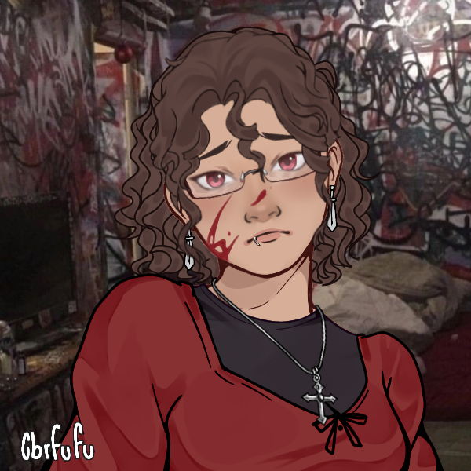
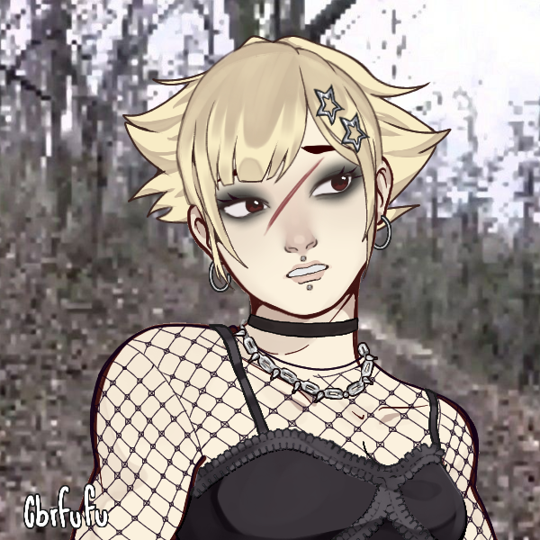
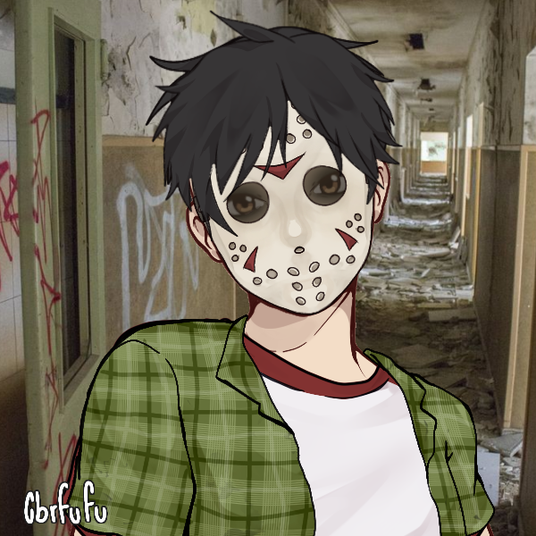

Biteback Co.
We are a team that has a great interest in the grotesque, traveling to different parts of America to dive deep into where your favorite horror films were shot.
Biteback Co. started in 2018, when the three of us, Nica, Kirsty, and Jesse, were in our university's horror club. We were watching John Carpenter's Halloween (1978) when Nica pointed out that the fictional town of Haddonfield is set in New Jersey. Kirsty argued back and said no, that Haddonfield was set in Illinois. After a bit of back and forth, Jesse searched up where Haddonfield was to end the argument and they found out that although Haddonfield was set in Illinois, it is inspired by Haddonfield, New Jersey, where the co-writer for Halloween, Debra Hill, grew up. After this discovery, all three of us wanted to discover what other horror films were inspired by, based in, or filmed in New Jersey and New York. From then on, we have been committed to finding the scariest local settings.
Meet the team behind Biteback Co.
Nica Pierce
My name is Nica and I am the lead writer. I have spent years recording all of the horror spots local to New York and New Jersey. I've been from Brick to Brooklyn, from Poughkeepsie to Passaic searching for the sets of slashers and other horror movies...and sometimes the horrors find me. I will continue to document these frightful areas before the evils eventually claim me.
Kirsty Cotton
Hi! I'm Kirsty, one of the writers and the web master for BiteBack Co. I am the backbone for this team, as I am the person who is able to put this website together and post all of our findings. I love collecting old technology, especially stuff that is used for ghost hunting or paranormal activity like EMF readers or Spiritboxes. My love for the unusual and my knowledge of New York keeps me an active part in documenting some of the best horror spots!
Jesse Walsh
I am Jesse. The photographer. That is all you need to know.
♒︎♏︎●︎◻︎ ❍︎♏︎ ♓︎ ♋︎❍︎ ●︎□︎⬧︎♓︎■︎♑︎ ❍︎⍓︎ ❍︎♓︎■︎♎︎